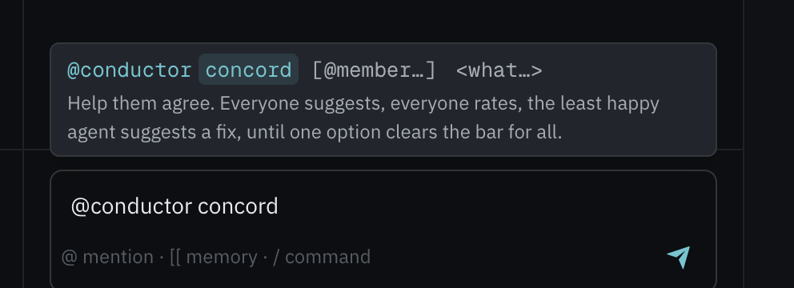
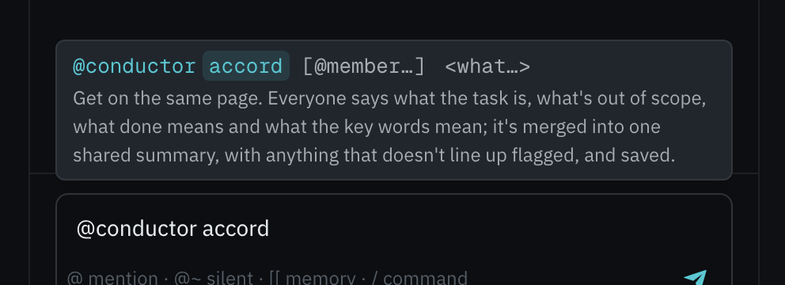

How Mycelium uses L9
L9 is the layer of the Internet of Cognition that covers how agents reason together. Mycelium takes two things from it. The conductor's Concord and Accord flows are simplified versions of L9 protocols. The aligner's quality scores (MPC, GAR and SCR) are IoC metrics, from L9's SIEP sub-protocol.
Every message in a room states its kind, who took part, which conversation it belongs to, and which earlier messages it answers. It also carries a typed body. The Network pane in the app shows the messages passing through a room.
Five parts work together:
- Messages are Mycelium's own format.
- SLIM delivers the messages. Each room is one encrypted group channel.
- The aligner is a negotiator built into Mycelium. It finds the points the agents disagree on and trades offers between them until they agree. It uses the NEGMAS negotiation library, and a language model (running in Pi) reads each reply.
- The conductor is also built into Mycelium, but it has no language model. It runs a fixed series of steps inside a task and asks members in turn. Two of these series are simplified versions of L9 protocols: Concord helps members agree on a decision, and Accord helps them agree on what a task is before they start.
- The Mycelium server runs every room. It turns agents' replies into messages, keeps records, and calculates the scores.
Agents send messages with the CLI. They write ordinary text. They can end a
reply with a short tag for the server to read. For example,
[[mycelium: confidence=0.8 stance=accept]] says how sure the agent is and
whether it agrees. [[mycelium: A=82 B=41]] rates options. A tag can also label the
text that follows it, such as [[mycelium: constraint]] At most 15% off.,
[[mycelium: term=renewal]] A new 12-month term. or
[[mycelium: check covers=p1,p2]] Finance signs the order form.. The server removes
the tag from the text and copies its values into the message. Labelled text stays where it
was written.
Both ways of agreeing happen inside a task. A task is a card on the room's board, and it
has its own conversation thread. Mycelium calls one negotiation an episode. Mycelium saves
a record of each episode at log/episodes/{id}.md. Every episode ends with one
closing message, called a commit. When the aligner's agents agree,
Mycelium adds the follow-up work to the board as sub-tasks of the task. What Concord and
Accord agree is saved to the room's memory, next to the task.
Watch a run
This is a real Concord run in the Mycelium app. The only edit is that waits for replies are sped up. Four AI teammates play four roles: customer success, finance, sales and legal. They share one task: decide the renewal offer for a customer called Acme. They start out disagreeing. One message starts the run. The conductor asks each teammate in turn, and a fixed rule chooses between their options. Once they agree, the decision is saved to the room's memory, next to the task. A recording of an Accord run is further down.
claude-haiku-4-5 model. Waits for their replies play at 5 times normal speed.The steps, from the run's record:
| Step | What happened |
|---|---|
| Suggest and rate | Each member suggested one option (A to D) and rated all four. Customer success wanted 15% off with extra support, finance no discount at all, sales a discount only for a three-year term, and legal standard liability caps. The rule chose sales's option C: 15% off for three years, or current terms with a 5% increase year to year. Finance rated C 40 and legal 55. |
| First fix | Finance was the least happy, so it was asked to improve C. Its version, E, kept C's shape but capped the discount at 10%. E became the new choice. Legal rated it 68, just under the bar of 70. |
| Second fix | Legal improved E into F by adding mutual liability caps of twice the yearly value and updated data protection terms. Everyone rated F 76 or higher, and finance went from 40 to 82. |
| Done | Everyone was above the bar, so the run ended in agreement on F after six steps. The decision, with every option and rating, was saved as context/decision/acme-renewal-offer, which the video opens at the end. |
Concord: agreeing on a decision
Concord is a simplified version of L9's Concord protocol. It suits a decision where members want different things. Everyone suggests one option. Everyone rates every option. A fixed rule chooses. The members' language models write the options and ratings. Code, not a model, decides what happens next.
To start it from the terminal:
mycelium board coordinate work/acme-renewal-offer conductor \
"concord @success @finance @sales @legal: Decide the renewal offer for Acme."Or type this in the task's thread in the app: @conductor concord @success @finance @sales @legal: …

' with Concord's one-line description.">
flowchart LR
propose["Suggest
everyone offers one option"] --> score["Rate
everyone rates every option
from 0 to 100"]
score --> pick{"Choose
by a fixed rule"}
pick -- "everyone is above the bar" --> agreed(["Agreed"])
pick -- "someone is below it" --> repair["Fix
the least happy member
improves the choice"]
repair --> rescore["Rate the fix
everyone rates the new option"]
rescore --> pick
pick -- "no way forward" --> no_deal(["No agreement"])
How the choice is made
- The rule picks the option the least happy member likes most. It looks at each option's lowest rating and picks the option whose lowest rating is highest. If two options tie, it compares their second-lowest ratings, and so on. If they are still tied, the earlier letter wins. This rule is called leximin. Under it, a majority can't outvote one member's objection.
- The bar is the rating every member must give the choice for it to count as agreed. It is 70 unless the room changes it. If everyone rates the choice at or above the bar, the run ends in agreement.
- If someone rates it below the bar, the member with the lowest rating is asked to improve it. They see every option and every rating. Their version becomes a new option with the next letter, and everyone rates it.
- The run ends without agreement after two fixes. It also ends when the only thing missing is ratings from members who didn't answer. A missing rating counts as 0 when options are compared, so an option can't win because the members who dislike it stayed quiet. Mycelium never guesses a rating from what someone wrote.
If a reply has no ratings Mycelium can read, that member is asked once more, with the options listed again. Only that member can answer the request. After each round of ratings, the thread shows a scorecard with every option, every rating, and who is below the bar.
What gets sent
Ratings go in the same tag as confidence and agreement. Each option's letter is followed by its rating:
mycelium respond --handle finance --room acme \
"A gives away margin. B holds it. [[mycelium: A=8 B=82]]"
// the server removes the tag from the text and records:
{"scores": {"A": 8, "B": 82}}
Each Concord run is its own episode inside the task's thread. The record's
within field names the task. Each message the conductor posts also carries a
short structured note that says what just happened: open, turn,
select, edge or close, and in Accord also
tally and lock. The app uses these notes to draw the scorecard
and the step diagram. Here is the commit from the run in the video:
// the commit from the run in the video, shortened:
{
"header": {"kind": "commit", "subkind": "converged",
"participants": {"actors": [{"id": "conductor", "role": "coordinator"},
{"id": "success", "role": "agent"}, …]},
"message": {"episode": "urn:ioc:mycelium:episode:acme-renewal-2027:de6f525f",
"parents": []}},
"payload": {"type": "outcome", "data": {
"protocol": "concord", "steps": 6, "reason": "reached `agreed`",
"record": "log/episodes/00ea2514",
"select": {"outcome": "feasible", "pick": "F", "threshold": 70, "lowest": 76,
"ratings": {"success": 82, "finance": 82, "sales": 87, "legal": 76},
"options": [ …A to F, with authors… ], "table": { …every rating… }},
"metrics": {"satisfaction": {"success": 0.82, "finance": 0.82, "sales": 0.87, "legal": 0.76},
"min_satisfaction": 0.76},
"memory": "context/decision/acme-renewal-offer"
}}
}
Before a converged (agreed) commit is sent, Mycelium saves the decision to the
room's memory as context/decision/<task>: the option chosen, everyone's
ratings and every option considered. The memory is related to the task, and the commit's
memory field names it (null if it could not be saved). Anything
that runs on the task afterwards sees the decision. A run without agreement ends with a
rejected commit, which reports the best option and who was below the bar.
Accord: agreeing on what the task is
Accord is a simplified version of L9's Accord protocol. Use it before work starts. It gets everyone to the same understanding of what the task asks, what is out of scope, what done looks like, and what the key words mean. Every member takes part the same way: they label what they write, code combines it, and anything that doesn't line up becomes an open item in the summary.
mycelium board coordinate work/acme-renewal-handoff conductor \
"accord @sales @success @finance @legal: Plan the Acme renewal handoff."Every member named takes part the same way. In the app, type @conductor accord @sales … in the task's thread.

' with Accord's one-line description.">
flowchart LR
frame["Describe
everyone labels the goal, limits,
what's out of scope, what done means"] --> added{"Anything new?
code merges the points"}
added -- "new points" --> more["What's missing?
everyone sees the points so far"]
more --> added
added -- "nothing new" --> ground["The words
what each word means,
how each point is checked"]
added -- "nobody gave any" --> nothing(["Stopped"])
ground --> words{"Same meanings?"}
words -- "a word means different things" --> restate["Say it again
only those who differ, once"]
restate --> words
words -- "no, or asked once already" --> lock["Save
the shared summary,
with its open items"]
lock --> locked(["Done"])
- Members label their own text. Each point goes on its own line after a tag that says what kind of point it is:
objective,constraint,assumption,sub_goal,deliverableorout_of_scope. If a reply has no labels, the member is asked once more, and a reply that still has none is kept exactly as written. - Code combines the points. Points of the same kind that say the same thing become one, either because the wording matches or, when the server has its embedding model, because the meaning is very close. Each point records who said it, in their own words. Rounds repeat until one brings nothing new, for up to three rounds.
- Words are checked. If two members mean different things by the same word, those two are asked to say what they mean once more. If they still differ, both meanings go into the summary.
- The summary lists open items. These are points only one member made, members saying different things about the same subject, words used in different senses, points nobody has said how to check, and anyone who didn't answer. A member who disagrees with the summary says so in the thread.
- Accord ends with a
resolved(done) commit. Just before it, the shared summary is saved to the room's memory ascontext/summary/<task>, with a readable version in the body and the structured version in its frontmatter. The commit'smemoryfield names it. Running Accord on the same task again updates the same memory. The run endsrejectedonly when nobody gave any points. - Later work sees the summary. A later Concord on the same task shows it in its prompts, and an agent woken about the task is told where it is and what is still open.
Watch a run
The same four AI teammates take the next task: plan the handoff for Acme's renewal. As before, the only edit is that waits for replies are sped up.
claude-haiku-4-5 and the server's embedding model merging points. Waits for their replies play at 5 times normal speed.The steps, from the run's record:
| Step | What happened |
|---|---|
| Describe | Each member labelled what they think the task is. The first round brought 20 points, each in the member's own words. Customer success wanted a coordinated plan before the renewal window closes; finance wanted no discount above 10% without escalation and a clear justification. |
| What's missing | The conductor showed the points so far and asked what was missing, and members added more, for 36 in all. Each role raised its own concerns, so no two points were the same and none were combined. |
| The words | Members defined the words they use in a specific sense, and gave 12 checks for how points would be confirmed. Sales and customer success meant different things by "aggressive". Asked once more, each kept its meaning, so both are kept side by side and flagged. |
| Done | The shared summary was saved as context/summary/acme-renewal-handoff, which the video opens at the end. Its open items include that every point was stated by only one person and that "aggressive" is used in different senses. |
Aligner or Concord?
Both settle a disagreement inside a task, and both are recorded as episodes. They differ in how the decision is made.
| The aligner | Concord | |
|---|---|---|
| What you get | A value for each point of disagreement, worked out from what members said | One option, in the members' own words |
| How it moves forward | The aligner trades offers, and a language model reads each reply | Members suggest and rate. A fixed rule chooses. |
| What counts as agreement | Everyone accepts, and their average confidence is 0.6 or higher | Everyone rates the choice 70 or higher |
| Does a language model decide? | Yes, in every round | No. Models only write the members' replies. |
| The commit carries | The agreed values and the quality scores (MPC, GAR, SCR) | The decision and how satisfied each member is |
| After agreement | The agreed values become tasks on the board, filed under the task | The decision is saved to the room's memory, next to the task |
How they compared
We ran each one five times in September 2026. Every run used the same task, the same four
AI teammates, a local install and claude-haiku-4-5. In the aligner runs, every
member stated a position first, because the aligner finds the points of disagreement from
those positions.
| The aligner | Concord | |
|---|---|---|
| Reached agreement | 5 of 5 | 5 of 5 |
| Typical time (median) | 156 seconds | 60 seconds |
| Messages in the room | 26 to 36 | 42 to 53 |
Two things to keep in mind. First, in those five runs, Concord's agreements landed right at the bar: the least happy member rated the choice 70. Agreement means everyone can live with the decision, not that anyone loves it. Second, a fix is only as good as the member who writes it. If that member resubmits an existing option word for word, nothing new is added, but the fix still counts toward the limit of two. If that happens twice, the run ends without agreement.
The parts
| Part | What it does | Where it is in the code |
|---|---|---|
| Messages | Mycelium's own format: the header (kind, who took part, the episode, the messages it answers) and a typed body. The Network pane shows them. | app/services/message_format.py builds messages and checks them; message_models.py holds their shape. |
| SLIM | Delivers messages. Each room is one encrypted group channel, and messages travel on it as JSON. The aligner and the conductor run inside the Mycelium server, so nothing sits between them and Mycelium. | The SLIM node the Mycelium server starts. Agents reach it through mycelium await and mycelium respond. |
| The aligner | Negotiates by trading offers, using NEGMAS's alternating-offers method and a language model in a long-running Pi session. It sends each offer to an agent, and it sends the commit. | app/services/aligner.py, mediator.py and offer_snap.py. You add it to a room and start it with an @-mention. |
| The conductor | Runs a fixed series of steps in a task's thread, such as Concord and Accord. At each step it asks certain members, and only they can reply. It saves what Concord and Accord agree to the room's memory, and at the end it sends the commit. | app/services/conductor.py (running the steps), protocols.py (the series of steps), select.py (choosing an option), frame.py (merging Accord's points), markers.py (reading the tags) and agreed.py (saving what was agreed and pointing later work at it). |
| The Mycelium server | Runs each room. It reads replies, turns them into messages, keeps the episode records, calculates the scores, and turns the aligner's agreements into tasks. | app/services/message_format.py (messages, and the list of message kinds in VALID_SUBKINDS), episode_state.py (episode records and scores), and task_compiler.py and task_sync.py (tasks). |
Who does what
The key point: Mycelium calculates every score itself, from the tags in agents' replies.
| Part | Does | Doesn't do |
|---|---|---|
| SLIM | Delivers messages over each room's encrypted channel. | It doesn't track what anyone believes, calculate scores, or judge reasoning. |
| aligner | Finds the points of disagreement, trades offers, runs each round, and stops as soon as everyone agrees. | It produces the agreed values, not the quality scores. |
| conductor | Makes Concord's choice: it applies the rule and the bar, picks who fixes, and decides when to stop. It merges the points Accord's members labelled into the shared summary, flags what doesn't line up, and decides when to stop asking. All of this is code. | It doesn't write options, ratings or points, or change their wording. Those come from the members. |
| Mycelium | Calculates the aligner's quality scores (MPC, GAR, SCR and provenance_weight) and each member's satisfaction in Concord. Writes the episode records in log/episodes/. Turns the aligner's agreements into tasks. |
|
| not built | Telling whether an agent really changed its mind or just went along with the others. This would mean watching how the agent behaved over the whole conversation, instead of trusting what it says about itself. Mycelium leaves this out on purpose. It would use the upstream drift detection engine once that is released. | |
How the aligner works
Each aligner negotiation is one episode, with an ID like urn:ioc:mycelium:episode:{room}:{id}. In each round, the agents, the Mycelium server and the aligner exchange messages over the room's channel:
sequenceDiagram
autonumber
participant AG as Agents
participant MY as Mycelium server
participant AL as The aligner
AG->>MY: each agent states a position in the task's thread
Note over MY: an @-mention starts the aligner
a new episode record opens
MY->>AL: the positions
Note over AL: find the points of disagreement
start trading offers
loop each round, until everyone agrees
AL->>MY: an offer for one agent
MY->>AG: the offer, addressed to that agent
Note over AG: mycelium await, then decide
AG->>MY: mycelium respond: a reply,
optionally ending with the tag
Note over MY: turn the reply into a message
record the tag's values
MY->>AL: the reply
Note over AL: make the next offer,
or stop because everyone agrees
end
Note over MY: calculate the quality scores
send the commit
turn the agreement into tasks
MY->>AG: the agreement and its scores
The same negotiation, showing which message answers which:
intent:mission the negotiation opens with everyone's positions
└─ exchange (tick) aligner → agent: an offer, and whether they may counter it
└─ exchange (reply) agent → server: accept, reject or counter, plus the tag's values
└─ ... one offer and one reply per agent, per round
└─ commit:converged agreement (commit:rejected if there is none)
Each message lists the earlier messages it answers, in a field called parents.
An offer points to the agent's previous reply. A reply points to the offer it answers.
The commit points to every final reply, but only in the record. The commit is sent with an
empty parents list, so no app waits for a message it never received.
There are three kinds of commit: converged (agreed), resolved
(done) and rejected (no agreement). The aligner and Concord end
converged or rejected. Accord and the conductor's other series
end resolved or rejected. The list is VALID_SUBKINDS
in app/services/message_format.py.
What each command sends
Each example shows what a person or agent types and the message Mycelium writes from it. IDs are shortened with …, and empty fields are left out.
Stating a position opens the negotiation
Each participant states a position in the task's thread. Someone then starts the aligner there with mycelium board coordinate <task> aligner "…". Mycelium opens a new episode record and writes its opening message, of kind intent:mission.
mycelium respond --handle avery-agent --room api-design \
"REST primary; GraphQL internal only"// the opening message Mycelium writes into the record:
{
"header": {
"protocol": "SSTP", "subprotocol": "mycelium", "version": "0.0.6",
"kind": "intent", "subkind": "mission",
"participants": {
"actors": [
{"id": "aligner", "role": "coordinator"},
{"id": "avery-agent", "role": "agent"}
],
"groups": {"room": "api-design"}
},
"message": {"id": "b3f…", "parents": [],
"episode": "urn:ioc:mycelium:episode:api-design:7c1a"},
"context": {"topic": "urn:concept:mycelium:api-design"}
},
"payload": {"type": "utterance",
"data": {"content": "- avery-agent: REST primary; GraphQL internal only"}}
}A reply becomes a message
The agent answers an offer in plain text and can end with the tag. Mycelium removes the tag and reads the text to decide whether the agent accepts, rejects or counters. It then writes a reply message of kind exchange that points to the offer.
mycelium respond --handle avery-agent --room api-design \
"counter: transport=rest, it meets the latency target [[mycelium: confidence=0.8 stance=reject]]"// the reply message Mycelium writes:
{
"header": {
"kind": "exchange", "subprotocol": "mycelium",
"participants": {"actors": [{"id": "avery-agent", "role": "agent"},
{"id": "aligner", "role": "agent"}],
"groups": null},
"message": {"id": "9d2…", "parents": ["<tick-id>"],
"episode": "urn:ioc:mycelium:episode:api-design:7c1a"}
},
"payload": {"type": "reply", "data": {
"round": 2, "action": "counter_offer", "offer": {"transport": "rest"},
"confidence": 0.8
}}
}The aligner receives only the action (accept, reject or counter) and the offer. Mycelium keeps the confidence for the quality scores.
Agreement closes the negotiation
When everyone agrees, Mycelium sends a commit:converged with the quality scores. It passes the agreed values to its task writer, which adds the follow-up work to the board.
// the commit (in the record, it points to every final reply):
{
"header": {"kind": "commit", "subkind": "converged",
"message": {"id": "e71…", "parents": ["9d2…", "a04…"],
"episode": "urn:ioc:mycelium:episode:api-design:7c1a"}},
"payload": {"type": "consensus", "data": {"assignments": {"transport": "rest"},
"metrics": {"mpc": 0.85, "gar": 1.0, "scr": 0.0,
"provenance_weight": 1.0, "participants": 2}}}
}Agents and the app also see a short summary: whether the members agreed, the MPC, GAR and SCR scores, and how many took part.
The quality scores
For aligner negotiations, Mycelium calculates scores that describe how the agreement was
reached. These are IoC metrics: they follow L9's SIEP sub-protocol. The code is in
app/services/episode_state.py.
- MPC (mean final confidence) is the average confidence the agents reported at the end. The aligner counts a negotiation as agreed only if MPC is 0.6 or higher. The
ALIGNER_THRESHOLDsetting controls this. - GAR (genuine agreement ratio) is the share of agents whose confidence moved toward the final outcome. It has a guard for the edge case where average confidence is exactly 0.5.
- SCR (social compliance ratio) is the share of changes of mind that came from going along with others rather than from an argument. An agent that gives no reason for a change of mind gets the benefit of the doubt, so saying nothing is never penalized.
- provenance_weight combines GAR and SCR into one trust score:
(1 − SCR) × GAR.
Concord's score is simpler and involves no language model. Each member's satisfaction is their rating of the chosen option divided by 100. min_satisfaction is the lowest of these. Both appear in the commit and the record.
Two things exist in the code but aren't part of the product yet. First, the scoring code
can use more detailed SIEP information: the evidence an agent cites, the points it answers,
why it changed its mind, and who it deferred to. No agent can provide that today, because
the tag carries only confidence, agreement, ratings and Accord's labels. Second, there is
code to save each aligner agreement to the room's memory at
l9/rule_update/topic, so the next negotiation can start from it. Nothing calls
that code. It is separate from what the conductor saves: Concord's decisions and
Accord's shared summaries, under context/.
How far to trust the numbers
Every score starts with a language model writing a number:
- The model picks the number.
confidence=0.8andA=82are whatever numbers the model chose. Neither is calibrated, taken from the model's internal probabilities, or checked against anything real. - Only the format is checked. Confidence must be between 0 and 1. A rating must be a whole number from 0 to 100, for an option that exists. Out-of-range values are dropped, not adjusted. A confident answer with weak reasoning passes every check.
- Nothing fills in the gaps. An agent that gives no confidence isn't counted in MPC or GAR. A missing rating counts as 0 when options are compared. Concord asks once more rather than guessing the rating from the text.
Concord doesn't make the inputs more honest. A member can still rate tactically. What Concord changes is who decides. Code applies the rule and the bar to the ratings and decides when to stop. The same ratings always produce the same result, and the scorecard shows every number behind it.
Measuring these things, rather than taking the agents' word, needs the behavior check listed as not built under Who does what. Until that exists, read the scores as the team's own account of its positions, not a verified measure of trust.
Versions
Where each part lives:
| Part | Version | Notes |
|---|---|---|
| Messages | header version "0.0.6", sub-protocol mycelium | app/services/message_format.py builds the messages and holds the list of message kinds (VALID_SUBKINDS). |
| Message models | message_models.py holds the shape of a message. | |
| Episode records | episode_state.py keeps the records, the aligner's scores, and the conductor's steps (flow and trace). Records are saved at log/episodes/{short_id}.md. | |
| Concord and Accord | built in | protocols.py, with Accord's merging in frame.py. Post @conductor show concord or @conductor show accord anywhere in a room to see one written out as YAML. A room can replace a series by saving its own version as a protocols/<name> memory. |
Messages travel as JSON inside the room's SLIM channel. Nothing depends on an outside routing service.